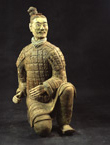

September 2007

Kneeling archer with a green face. Terracotta with coloured pigment. Qin dynasty (221-206 BC).
H. 122 cm.
Museum of the Terracotta Warriors and Horses of Emperor Qin Shihuang
|
First Emperor
This once-in-a-lifetime exhibition will explore one of the greatest archaeological discoveries of the 20th century and provide an insight into China's First Emperor, Qin Shihuangdi, and his legacy.
Objects featured in the exhibition will include a number of the world-famous terracotta warriors from Xi'an, China, which were buried alongside the First Emperor in readiness for the afterlife, as well as some of the most striking recent discoveries made on the site.
In introducing the idea of a unified state and effectively creating China in 221 BC, the First Emperor of Qin created what is today the oldest surviving political entity in the world. How that state has survived, developed and is viewed today will be explored through events, lectures and debates around the exhibition.
Click here to subscribe to the Museum's free monthly e-newsletter, Mercury . By subscribing you will be one of the first to receive details on how to book your tickets and guarantee your chance to explore China's past, present and possible futures at the British Museum in Autumn 2007 and Spring 2008.
Sponsored by
Top
|